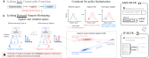
Abstract
On-policy reinforcement learning with verifiable rewards (RLVR) can improve the current objective while making successful behaviors for later objectives harder to sample. We study this verifier-induced support reshaping through mathematical reasoning and constrained instruction following across two model families. Math-RLVR raises average instruction-following success but leaves fewer prompts solvable under repeated sampling. IF-RLVR reduces math searchability and the reward variation available to later training. Distributional analyses and controlled interventions locate a key change at the response opening. Reference-policy constraints, routing priors, and on-policy distillation preserve cross-task support only partially. Tests on MathIF and ReasonIF further show that separate gains only partly translate into answers that are both correct and constraint-following.
TL;DR. A better score today does not guarantee that tomorrow’s successful responses remain reachable.
The question behind the score
With a fixed rollout budget, a successful response must remain likely enough to be sampled before an on-policy update can reinforce it. We call these reachable successes effective rewardable support.
We train Qwen3-8B-Base and Qwen2.5-Math-7B with math or instruction-following (IF) verifiers, then test both directions and both training orders. pass@1 measures average single-rollout success; best@k measures the share of prompts with at least one success in k samples.
Higher scores can hide narrower support
The two verifiers reshape cross-task behavior differently. Math-RLVR increases average IF success while reducing prompt coverage; IF-RLVR makes correct math responses harder to find even with more samples.
On IFEval with Qwen3-8B-Base, pass@1 rises by 6.5% while best@32 falls by 9.8% (absolute changes). The same split appears across both models and both IF benchmarks: more prompts become consistently correct, but more also become consistently wrong.

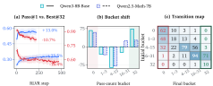
After IF-RLVR, AIME best@k falls at every tested budget from 4 to 32. Visible openings shift from step-by-step derivations (DRI) toward direct answers (DAI). These labels describe generated text, not hidden reasoning states.

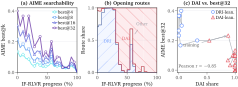
Training order shapes future learning
Switching verifiers exposes the consequence of narrower support. IF-first training leaves little reward variation for later math updates; in the reverse order, retaining math performance limits IF adaptation.
After the switch to Math-RLVR, the group of prompts with both successful and failed rollouts shrinks from 33.6% to 1.6% within 20 steps. Scores improve, but almost all groups become uniformly right or wrong, leaving little within-group learning signal.

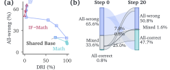
We sweep the reference-policy KL coefficient over 0, 0.04, 0.08, and 0.12. Stronger constraints retain more math performance but yield smaller IF gains. No tested coefficient achieves both math retention and the unconstrained IF gains.

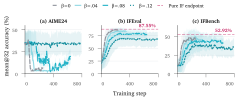
Response openings change math searchability
The largest next-token distribution shift occurs at the first response token. RLVR reweights existing token candidates and can promote low-probability openings. Controlled interventions then test whether choosing a different opening changes which math solutions can be reached.
Without updating model parameters, forcing Base-side tokens or step-by-step (DRI) prefixes increases math best@32 from IF-RLVR checkpoints in both families. The reverse intervention is asymmetric across models, so the result supports an opening-route effect within the tested settings.

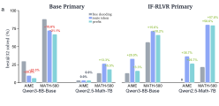
Position-wise Jensen–Shannon divergence peaks at the first generated token. The token analysis shows reweighting of existing opening candidates; the first-token probabilities show math and IF verifiers promoting different openings.

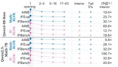
In the Qwen3 AIME sweep, forcing the same IF-side token suppresses DRI only near the response opening. Moving it later restores the DRI route, although best@32 remains variable.

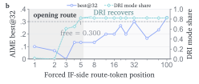
Preserving support takes more than a prior
The opening effect suggests two interventions: initialize a reasoning-friendly route, or provide dense teacher supervision through on-policy distillation (OPD). A one-time prior only delays the shift, and OPD outcomes depend on which teacher state is used.
Four SFT cold starts use 50 correct math responses before the same 100-step IF-RLVR protocol. Soft DRI delays the direct-answer shift longest, but all four conditions reach 100% direct-answer (DAI) openings by step 100. A stronger prior does not last longer in this run.

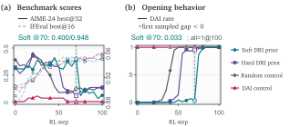
With the step-100 IF teacher and 50 OPD student steps, the student’s MATH-500-128 mean@16 falls from 34.33% to 8.79%, while shortcut responses rise from 4.5% to 18.8%. Dense supervision alone does not preserve math support.

With 100 OPD student steps for each teacher from steps 20, 40, 60, and 80, the step-40 teacher gives the strongest IF transfer. The step-20 teacher is the only one whose student improves MATH-500 mean@16 (+0.93%, absolute change). Selecting by IF performance alone misses retention and response quality.

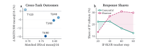
Separate gains only partly combine
Can one response be both correct and instruction-following? An independent endpoint test on MathIF and ReasonIF evaluates correctness (C), strict following (F), and their same-response conjunction (J), using 16 rollouts for each of 290 prompts per benchmark.
On MathIF, Math-RLVR raises correctness from 35.9% to 47.2%, but joint success moves only from 9.4% to 11.8%. IF-RLVR raises strict following from 25.0% to 43.1%, while joint success reaches 14.8%. ReasonIF shows the same gap between target-aligned gains and joint gains.
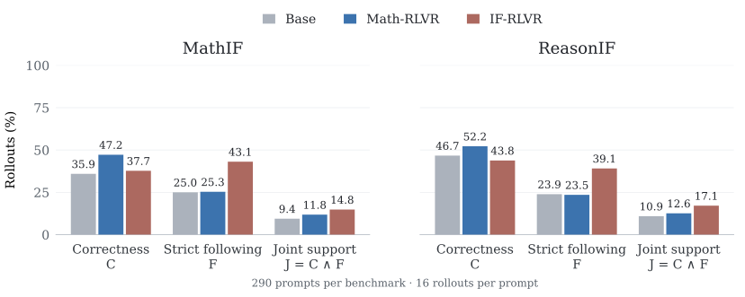
The implication. Evaluate more than the endpoint score: inspect reachable successes, the learning signal available after switching objectives, and whether desired behaviors coexist in the same response.
Scope: two starting model families and fixed sampling budgets, with one fixed-seed run per configuration. The findings characterize the tested training paths; they do not establish irreversible loss or a universal preservation strategy. Full settings and additional analyses are in the technical report.
Citation
@misc{wei2026verifier,
title = {Verifier-Induced Support Reshaping in On-Policy Optimization},
author = {Shaohang Wei and Zikun Su and Feifan Song and Wen Luo and Wei Li and Guangyue Peng and Houfeng Wang},
year = {2026},
eprint = {2608.00220},
archivePrefix = {arXiv},
primaryClass = {cs.LG},
doi = {10.48550/arXiv.2608.00220},
url = {https://arxiv.org/abs/2608.00220}
}